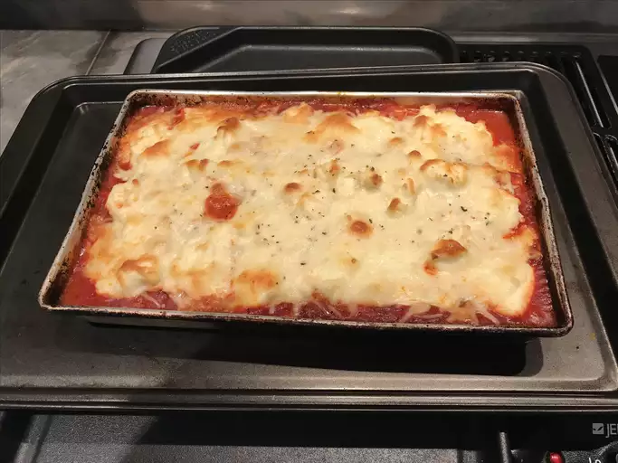

Home

Recette de lasagnes tres facile
Ingredients
- 1 Pound sweet italian sausage
- 3/4 Pound lean ground beef
- 1/2 cup minced onion
- 2 cloves garlic, crushed
Steps
- Preheat oven to 375 degrees F (190 degrees C).
- Cut zucchini lengthwise into 1/4-inch thick slices with a knife or mandolin.
- Pour 2 tablespoons tomato sauce on the bottom of a 9x13-inch baking dish. Arrange zucchini
slices in a single layer, slightly overlapping, over tomato sauce
- Top with a thin layer of mozzarella, 1/3 of the bechamel (see Editor's Note), 1/3 of remaining tomato sauce, 1/3 of the Parmigiano Reggiano cheese,
and 1/3 of the basil. Repeat layers, topping with bechamel and Parmigiano Reggiano cheese.
- Bake in the preheated oven until sauce is bubbly and the top is golden brown, about 35 minutes.
Allow to set until remaining liquid is absorbed, about 10 minutes.